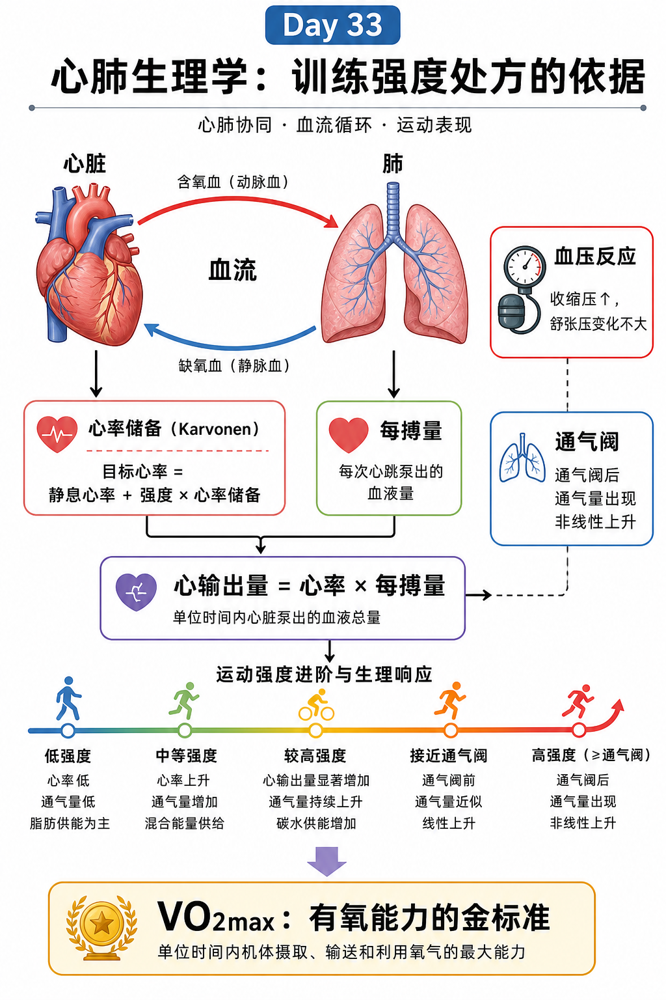

Day 33 · 心肺生理-摄氧量与心率储备
把氧运输链、心率储备和通气阈放在一张图里看，才知道训练强度该怎么定。
一句话总结
心肺生理像一条“送氧流水线”：VO2max 是整条链的上限，Karvonen 用心率储备定档，心输出量决定泵血量，通气阈告诉你什么时候开始明显喘。

先看上半张的氧运输链，再看中间的心率储备、每搏量和心输出量，最后看下方强度台阶与 VO2max。
核心要点
- VO2max：最大摄氧量是有氧能力金标准，但它看的是整条链，不是单看肺或心。真实例子
字面意思
VO2max 就是单位时间内身体最多能摄取、运输和利用多少氧。它不是“肺容量”本身，而是空气进肺、氧进血、心脏泵血、血管配送、肌肉利用的总结果。
大白话
像送货上限。仓库、车队、道路、收货点只要一段卡住，整条链就上不去。
为什么影响训练
同样跑步速度，有的人能轻松说话，有的人已经喘到断句。差别不只在肺，也在心输出量、血红蛋白、毛细血管和线粒体利用能力。
耐力训练后，很多人会觉得“同样配速没那么累”。通常不是肺突然变大，而是送氧和用氧的整套流程更顺。
常见误解❌以为 VO2max 只看肺活量。✅它是系统能力，不是单器官分数。
- Karvonen 心率储备：靶心率 = (最大心率 - 静息心率) × 强度 + 静息心率。底层机制
心率储备先把静息心率扣掉，再看你还能往上提多少。这样比只拿最大心率算，更能反映个体差异和当天状态。
真实例子若静息心率 60，最大心率 190，目标强度 70%，靶心率 = (190-60)×0.7+60 = 151 bpm。这个数比“190×70%”更像真实训练心率。
常见误解输入 含义 训练意义 最大心率 理论上限 决定可用心率空间 静息心率 个体基线 反映恢复和适应状态 强度百分比 处方档位 把目标写成可执行心率 ❌以为只要记住最大心率就够。✅静息心率差很多，HRR 才更个体化。
- 每搏输出量与心输出量：每搏量是每次泵出的血，心输出量 = 心率 × 每搏量。真实例子
字面意思
每搏输出量是心脏每次收缩推出去多少血。心率是每分钟跳多少次。两者相乘，就是每分钟送出的总血量。
大白话
像水泵。泵得快，或者每次泵得更多，总流量都能上来。
训练含义
耐力训练常让每搏量变大，所以同样心率下也能送出更多血。新手一跑就心率飙高，常是每搏量还没跟上。
同样 150 bpm，训练者可能靠更大的每搏量输出更多血，所以主观感觉更稳；未训练者则更容易觉得“心跳顶上去了”。
常见误解❌以为心率越高一定越强。✅总血流量还要看每搏量，心率只是其中一半。
- 血压反应：运动时收缩压会上升，舒张压通常变化不大。底层机制
运动时心输出量上升，所以收缩压会抬高。与此同时，工作肌血管扩张，外周阻力不一定同步增加，所以舒张压多半变化不大。
真实例子跑步后测血压，看到收缩压上去了，不一定是坏事。要警惕的是异常过高、伴随胸闷、头晕、恶心或恢复异常慢。
常见误解指标 常见急性反应 解释 收缩压 上升 泵血更强 舒张压 变化较小 外周阻力不一定大幅变 异常信号 症状明显 回到筛查与转诊流程 ❌以为血压上升就是“训练伤身”。✅看幅度、症状和恢复情况，别把正常运动反应和危险反应混在一起。
- 通气阈：通气量开始非线性上升的点，通常意味着强度进入更吃力的区间。真实例子
字面意思
吸气和呼气不会一直平稳增加。到某个点，呼吸会突然变快、变深，像曲线拐陡了。
大白话
前面还能稳稳说话，过线后就开始“要停顿喘气”。这个点不是随便来的，和代谢压力、二氧化碳排出需求有关。
训练含义
通气阈常能和乳酸阈、NASM Zone 2/3 分界互相参照。你不一定要背一堆名词，但要知道强度在这里开始明显变难顶。
慢跑还能边跑边说完整句子，过阈后只能断断续续说几个词，说明呼吸需求已经非线性上升。
常见误解❌以为“喘”只是意志问题。✅通气阈后呼吸负担本来就会陡增，不能只靠硬扛。
- 强度区间：HRR 先给个人心率，再对照 Zone，才更像可执行处方。训练连接
Zone1
适合基础有氧、恢复和习惯建立，呼吸较稳，能轻松说话。
Zone2
进阶有氧区，呼吸明显加快但还能控制，是很多人耐力提升的主战场。
Zone3
接近无氧阈，疲劳成本高，适合短段高强度，不该拿来替代全部基础训练。
Day30 的 Zone 只是粗框，Day33 的 HRR 让这张框更贴个人。先算 HRR，再看自己落在哪个 Zone，顺序别反。
- 训练应用：强度处方要同时看目标、心率、通气感觉和恢复反馈。底层机制
同样的心率，对久坐人和训练者意义不同；同样的感觉，对白天疲劳和状态好时也不同。处方要靠数字和主观感受一起校准。
训练例子增肌或恢复期可用较低强度和更稳的呼吸；减脂和基础有氧可在 Zone1-2 累积时间；间歇或测试则更接近通气阈和 Zone3。
考试锚点会算 HRR、会解释 VO2max、会说清心输出量和血压反应，Day33 就算过关了一大半。
常见误区
❌很多人以为 VO2max 就是肺活量。✅它是整套氧运输与利用系统的上限。
❌很多人以为只看最大心率就够。✅静息心率差异大，Karvonen 心率储备更个体化。
❌很多人以为运动时血压一升就是异常。✅收缩压上升多是正常反应，要结合症状和恢复看。
记忆口诀
“VO2 看全链，HRR 算个体；心率乘每搏，才得心输出；收缩压上，舒张压稳；呼吸一拐陡，就到通气阈。”
翻转卡复习
实操关联
- 有氧开方：先用 HRR 算个人靶心率，再对照 Zone1-3 选训练区间。
- 跑步判断：能说完整句子，多半还没过通气阈；只能断词，通常已接近阈值。
- 恢复监测：静息心率升高、同样速度更喘、恢复慢，说明状态可能在下滑。
- 减脂安排：Zone1-2 适合堆时长，Zone3 适合点到为止，不要全周都顶到阈值。
- 力量搭配：大重量前后别把心肺训练塞太满，免得疲劳把输出压掉。
- 测试思路：看 VO2max、HRR、通气阈、血压反应，别只盯单一心率数字。